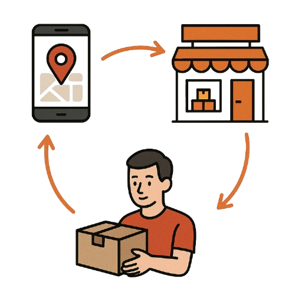
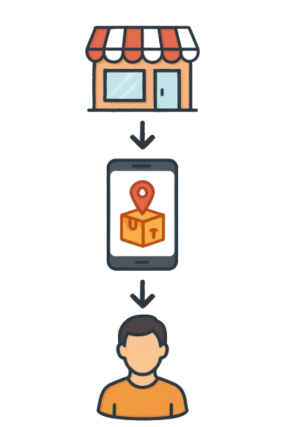

Receba suas encomendas com segurança, mesmo onde os apps não entregam
Portaria da Comunidade é um site feito para ajudar moradores de bairros onde os aplicativos de entrega (como iFood, Shopee, Mercado Livre, Uber, 99Pop e outros) não chegam. Funciona assim: você entra no nosso site, faz seu cadastro e encontra um ponto de entrega perto da sua casa. Na hora de fazer uma compra pelo app, basta usar o endereço desse ponto como destino. Depois, volta ao nosso site e cadastra sua encomenda. Quando o pedido chegar ao ponto de entrega, a pessoa responsável avisa no sistema, e você pode ir lá buscar com segurança. É simples, rápido e feito para a sua comunidade.

